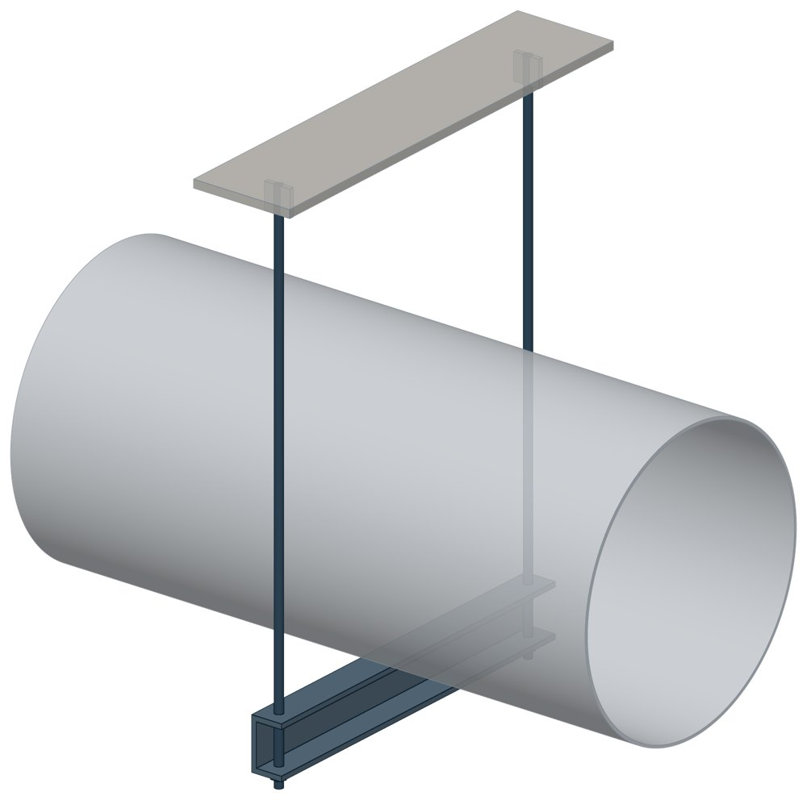

Блок подвески с опорной балкой ОСТ 34-10-726-93
ОСТ 34-10-726-93. Dн 57–1620 мм, допускаемая нагрузка — до 196,2 кН, масса 11,4–434 кг.

- Диаметр трубы Dн
- 57–1620 мм
- Документ
- ОСТ 34-10-726-93
- Исполнений
- 122
- Допускаемая нагрузка
- до 196,2 кН
- Масса
- 11,4–434 кг
- 3D-модели
- у всех исполнений (условные: общий вид по габаритам)
Таблица исполнений ОСТ 34-10-726-93
| Обозначение | Код ПРОМБУРГ | Dнмм | Допускаемая нагрузкакН | Высота опорной балкимм | Массакг | 3D |
|---|---|---|---|---|---|---|
| 57У-01 ОСТ 34-10-726-93 | ПБ-34726-0057-1 | 57 | 0,9 | 80 | 11,8 | 3D |
| 57К-02 ОСТ 34-10-726-93 | ПБ-34726-0057-2 | 57 | 0,9 | 80 | 11,8 | 3D |
| 76У-03 ОСТ 34-10-726-93 | ПБ-34726-0076-1 | 76 | 1,5 | 80 | 12,1 | 3D |
| 76К-04 ОСТ 34-10-726-93 | ПБ-34726-0076-2 | 76 | 1,5 | 80 | 12,1 | 3D |
| 89У-05 ОСТ 34-10-726-93 | ПБ-34726-0089-1 | 89 | 2 | 80 | 12,3 | 3D |
| 89К-06 ОСТ 34-10-726-93 | ПБ-34726-0089-2 | 89 | 2 | 80 | 12,3 | 3D |
| 108У-07 ОСТ 34-10-726-93 | ПБ-34726-0108-1 | 108 | 2,9 | 80 | 13,4 | 3D |
| 108К-08 ОСТ 34-10-726-93 | ПБ-34726-0108-2 | 108 | 2,9 | 80 | 13,4 | 3D |
| 133У-09 ОСТ 34-10-726-93 | ПБ-34726-0133-1 | 133 | 3,8 | 80 | 14 | 3D |
| 133К-10 ОСТ 34-10-726-93 | ПБ-34726-0133-2 | 133 | 3,8 | 80 | 14 | 3D |
| 159У-11 ОСТ 34-10-726-93 | ПБ-34726-0159-1 | 159 | 5,4 | 80 | 14,5 | 3D |
| 159К-12 ОСТ 34-10-726-93 | ПБ-34726-0159-2 | 159 | 5,4 | 80 | 14,5 | 3D |
| 219У-13 ОСТ 34-10-726-93 | ПБ-34726-0219-1 | 219 | 11,7 | 100 | 24 | 3D |
| 219К-14 ОСТ 34-10-726-93 | ПБ-34726-0219-2 | 219 | 11,7 | 100 | 25 | 3D |
| 273У-15 ОСТ 34-10-726-93 | ПБ-34726-0273-1 | 273 | 18,1 | 100 | 27 | 3D |
| 273К-16 ОСТ 34-10-726-93 | ПБ-34726-0273-2 | 273 | 18,1 | 100 | 28 | 3D |
| 325У-17 ОСТ 34-10-726-93 | ПБ-34726-0325-1 | 325 | 23,5 | 120 | 39 | 3D |
| 325К-18 ОСТ 34-10-726-93 | ПБ-34726-0325-2 | 325 | 23,5 | 120 | 41 | 3D |
| 377У-19 ОСТ 34-10-726-93 | ПБ-34726-0377-1 | 377 | 28,4 | 120 | 41 | 3D |
| 377К-20 ОСТ 34-10-726-93 | ПБ-34726-0377-2 | 377 | 28,4 | 120 | 43 | 3D |
| 426У-21 ОСТ 34-10-726-93 | ПБ-34726-0426-1 | 426 | 33,3 | 120 | 59 | 3D |
| 426К-22 ОСТ 34-10-726-93 | ПБ-34726-0426-2 | 426 | 33,3 | 120 | 63 | 3D |
| 478У-23 ОСТ 34-10-726-93 | ПБ-34726-0478-1 | 478 | 33,3 | 160 | 73 | 3D |
| 478У-24 ОСТ 34-10-726-93 | ПБ-34726-0478-2 | 478 | 33,3 | 160 | 77 | 3D |
| 530У-25 ОСТ 34-10-726-93 | ПБ-34726-0530-1 | 530 | 46,1 | 200 | 87 | 3D |
| 530К-26 ОСТ 34-10-726-93 | ПБ-34726-0530-2 | 530 | 46,1 | 200 | 92 | 3D |
| 630У-27 ОСТ 34-10-726-93 | ПБ-34726-0630-1 | 630 | 66,7 | 200 | 110 | 3D |
| 630К-28 ОСТ 34-10-726-93 | ПБ-34726-0630-2 | 630 | 66,7 | 200 | 114 | 3D |
| 720У-29 ОСТ 34-10-726-93 | ПБ-34726-0720-1 | 720 | 80,4 | 200 | 134 | 3D |
| 720К-30 ОСТ 34-10-726-93 | ПБ-34726-0720-2 | 720 | 80,4 | 200 | 141 | 3D |
| 820У-31 ОСТ 34-10-726-93 | ПБ-34726-0820-1 | 820 | 98,1 | 200 | 143 | 3D |
| 820К-32 ОСТ 34-10-726-93 | ПБ-34726-0820-2 | 820 | 98,1 | 200 | 151 | 3D |
| 920У-33 ОСТ 34-10-726-93 | ПБ-34726-0920-1 | 920 | 112,8 | 240 | 144 | 3D |
| 920К-34 ОСТ 34-10-726-93 | ПБ-34726-0920-2 | 920 | 112,8 | 240 | 203 | 3D |
| 1020У-35 ОСТ 34-10-726-93 | ПБ-34726-1020-1 | 1020 | 147,1 | 300 | 232 | 3D |
| 1020К-36 ОСТ 34-10-726-93 | ПБ-34726-1020-2 | 1020 | 147,1 | 300 | 242 | 3D |
| 1220У-37 ОСТ 34-10-726-93 | ПБ-34726-1220-1 | 1220 | 196,2 | 300 | 303 | 3D |
| 1220К-38 ОСТ 34-10-726-93 | ПБ-34726-1220-2 | 1220 | 196,2 | 300 | 318 | 3D |
| 1420У-39 ОСТ 34-10-726-93 | ПБ-34726-1420-1 | 1420 | 196,2 | 300 | 328 | 3D |
| 1420К-40 ОСТ 34-10-726-93 | ПБ-34726-1420-2 | 1420 | 196,2 | 300 | 345 | 3D |
| 1620У-41 ОСТ 34-10-726-93 | ПБ-34726-1620-1 | 1620 | 196,2 | 300 | 414 | 3D |
| 1620К-42 ОСТ 34-10-726-93 | ПБ-34726-1620-2 | 1620 | 196,2 | 300 | 434 | 3D |
| Обозначение | Код ПРОМБУРГ | Dнмм | Допускаемая нагрузкакН | Высота опорной балкимм | Массакг | 3D |
|---|---|---|---|---|---|---|
| 57У-43 ОСТ 34-10-726-93 | ПБ-34726-0057-3 | 57 | 0,9 | 80 | 11,5 | 3D |
| 57К-44 ОСТ 34-10-726-93 | ПБ-34726-0057-4 | 57 | 0,9 | 80 | 11,5 | 3D |
| 76У-45 ОСТ 34-10-726-93 | ПБ-34726-0076-3 | 76 | 1,5 | 80 | 11,7 | 3D |
| 76К-46 ОСТ 34-10-726-93 | ПБ-34726-0076-4 | 76 | 1,5 | 80 | 11,7 | 3D |
| 89У-47 ОСТ 34-10-726-93 | ПБ-34726-0089-3 | 89 | 2 | 80 | 11,7 | 3D |
| 89К-48 ОСТ 34-10-726-93 | ПБ-34726-0089-4 | 89 | 2 | 80 | 11,7 | 3D |
| 108У-49 ОСТ 34-10-726-93 | ПБ-34726-0108-3 | 108 | 2,9 | 80 | 12,5 | 3D |
| 108К-50 ОСТ 34-10-726-93 | ПБ-34726-0108-4 | 108 | 2,9 | 80 | 12,5 | 3D |
| 133У-51 ОСТ 34-10-726-93 | ПБ-34726-0133-3 | 133 | 3,8 | 80 | 12,4 | 3D |
| 133К-52 ОСТ 34-10-726-93 | ПБ-34726-0133-4 | 133 | 3,8 | 80 | 12,4 | 3D |
| 159У-53 ОСТ 34-10-726-93 | ПБ-34726-0159-3 | 159 | 5,4 | 80 | 12,8 | 3D |
| 159К-54 ОСТ 34-10-726-93 | ПБ-34726-0159-4 | 159 | 5,4 | 80 | 12,8 | 3D |
| 219У-55 ОСТ 34-10-726-93 | ПБ-34726-0219-3 | 219 | 11,7 | 100 | 20,2 | 3D |
| 219К-56 ОСТ 34-10-726-93 | ПБ-34726-0219-4 | 219 | 11,7 | 100 | 20,3 | 3D |
| 273У-57 ОСТ 34-10-726-93 | ПБ-34726-0273-3 | 273 | 18,1 | 100 | 22,1 | 3D |
| 273К-58 ОСТ 34-10-726-93 | ПБ-34726-0273-4 | 273 | 18,1 | 100 | 22,2 | 3D |
| 325У-59 ОСТ 34-10-726-93 | ПБ-34726-0325-3 | 325 | 23,5 | 120 | 32,9 | 3D |
| 325К-60 ОСТ 34-10-726-93 | ПБ-34726-0325-4 | 325 | 23,5 | 120 | 32,9 | 3D |
| 377У-61 ОСТ 34-10-726-93 | ПБ-34726-0377-3 | 377 | 28,4 | 120 | 38,7 | 3D |
| 377К-62 ОСТ 34-10-726-93 | ПБ-34726-0377-4 | 377 | 28,4 | 120 | 38,7 | 3D |
| 426У-63 ОСТ 34-10-726-93 | ПБ-34726-0426-3 | 426 | 33,3 | 120 | 44 | 3D |
| 426К-64 ОСТ 34-10-726-93 | ПБ-34726-0426-4 | 426 | 33,3 | 120 | 44 | 3D |
| 478У-65 ОСТ 34-10-726-93 | ПБ-34726-0478-3 | 478 | 33,3 | 160 | 56,3 | 3D |
| 478У-66 ОСТ 34-10-726-93 | ПБ-34726-0478-4 | 478 | 33,3 | 160 | 56,3 | 3D |
| 530У-67 ОСТ 34-10-726-93 | ПБ-34726-0530-3 | 530 | 46,1 | 200 | 69,7 | 3D |
| 530К-68 ОСТ 34-10-726-93 | ПБ-34726-0530-4 | 530 | 46,1 | 200 | 69,7 | 3D |
| 630У-69 ОСТ 34-10-726-93 | ПБ-34726-0630-3 | 630 | 66,7 | 200 | 80,5 | 3D |
| 630К-70 ОСТ 34-10-726-93 | ПБ-34726-0630-4 | 630 | 66,7 | 200 | 80,5 | 3D |
| 720У-71 ОСТ 34-10-726-93 | ПБ-34726-0720-3 | 720 | 80,4 | 200 | 101,3 | 3D |
| 720К-72 ОСТ 34-10-726-93 | ПБ-34726-0720-4 | 720 | 80,4 | 200 | 101,3 | 3D |
| 820У-73 ОСТ 34-10-726-93 | ПБ-34726-0820-3 | 820 | 98,1 | 200 | 102,8 | 3D |
| 820К-74 ОСТ 34-10-726-93 | ПБ-34726-0820-4 | 820 | 98,1 | 200 | 102,8 | 3D |
| 920У-75 ОСТ 34-10-726-93 | ПБ-34726-0920-3 | 920 | 112,8 | 240 | 148 | 3D |
| 920К-76 ОСТ 34-10-726-93 | ПБ-34726-0920-4 | 920 | 112,8 | 240 | 148 | 3D |
| 1020У-77 ОСТ 34-10-726-93 | ПБ-34726-1020-3 | 1020 | 147,1 | 300 | 208,1 | 3D |
| 1020К-78 ОСТ 34-10-726-93 | ПБ-34726-1020-4 | 1020 | 147,1 | 300 | 208,1 | 3D |
| 1220У-79 ОСТ 34-10-726-93 | ПБ-34726-1220-3 | 1220 | 196,2 | 300 | 218,4 | 3D |
| 1220К-80 ОСТ 34-10-726-93 | ПБ-34726-1220-4 | 1220 | 196,2 | 300 | 218,4 | 3D |
| 1420У-81 ОСТ 34-10-726-93 | ПБ-34726-1420-3 | 1420 | 196,2 | 300 | 225,7 | 3D |
| 1420К-82 ОСТ 34-10-726-93 | ПБ-34726-1420-4 | 1420 | 196,2 | 300 | 225,7 | 3D |
| 1620У-83 ОСТ 34-10-726-93 | ПБ-34726-1620-3 | 1620 | 196,2 | 300 | 269 | 3D |
| 1620К-84 ОСТ 34-10-726-93 | ПБ-34726-1620-4 | 1620 | 196,2 | 300 | 269 | 3D |
| Обозначение | Код ПРОМБУРГ | Dнмм | Допускаемая нагрузкакН | Высота опорной балкимм | Массакг | 3D |
|---|---|---|---|---|---|---|
| 89У-85 ОСТ 34-10-726-93 | ПБ-34726-0089-5 | 89 | 2 | 80 | 11,4 | 3D |
| 89К-86 ОСТ 34-10-726-93 | ПБ-34726-0089-6 | 89 | 2 | 80 | 11,7 | 3D |
| 108У-87 ОСТ 34-10-726-93 | ПБ-34726-0108-5 | 108 | 2,9 | 80 | 11,4 | 3D |
| 108К-88 ОСТ 34-10-726-93 | ПБ-34726-0108-6 | 108 | 2,9 | 80 | 11,8 | 3D |
| 133У-89 ОСТ 34-10-726-93 | ПБ-34726-0133-5 | 133 | 3,8 | 80 | 11,5 | 3D |
| 133К-90 ОСТ 34-10-726-93 | ПБ-34726-0133-6 | 133 | 3,8 | 80 | 11,9 | 3D |
| 159У-91 ОСТ 34-10-726-93 | ПБ-34726-0159-5 | 159 | 5,4 | 80 | 11,5 | 3D |
| 159К-92 ОСТ 34-10-726-93 | ПБ-34726-0159-6 | 159 | 5,4 | 80 | 12 | 3D |
| 219У-93 ОСТ 34-10-726-93 | ПБ-34726-0219-5 | 219 | 11,7 | 100 | 15,9 | 3D |
| 219К-94 ОСТ 34-10-726-93 | ПБ-34726-0219-6 | 219 | 11,7 | 100 | 17,6 | 3D |
| 273У-95 ОСТ 34-10-726-93 | ПБ-34726-0273-5 | 273 | 18,1 | 100 | 18,5 | 3D |
| 273К-96 ОСТ 34-10-726-93 | ПБ-34726-0273-6 | 273 | 18,1 | 100 | 20,8 | 3D |
| 325У-97 ОСТ 34-10-726-93 | ПБ-34726-0325-5 | 325 | 23,5 | 120 | 24 | 3D |
| 325К-98 ОСТ 34-10-726-93 | ПБ-34726-0325-6 | 325 | 23,5 | 120 | 27,4 | 3D |
| 377У-99 ОСТ 34-10-726-93 | ПБ-34726-0377-5 | 377 | 28,4 | 120 | 25,2 | 3D |
| 377К-100 ОСТ 34-10-726-93 | ПБ-34726-0377-6 | 377 | 28,4 | 120 | 28,7 | 3D |
| 426У-101 ОСТ 34-10-726-93 | ПБ-34726-0426-5 | 426 | 33,3 | 120 | 25,2 | 3D |
| 426К-102 ОСТ 34-10-726-93 | ПБ-34726-0426-6 | 426 | 33,3 | 120 | 33,7 | 3D |
| 478У-103 ОСТ 34-10-726-93 | ПБ-34726-0478-5 | 478 | 33,3 | 160 | 39,4 | 3D |
| 478У-104 ОСТ 34-10-726-93 | ПБ-34726-0478-6 | 478 | 33,3 | 160 | 47,1 | 3D |
| 530У-105 ОСТ 34-10-726-93 | ПБ-34726-0530-5 | 530 | 46,1 | 200 | 53,1 | 3D |
| 530К-106 ОСТ 34-10-726-93 | ПБ-34726-0530-6 | 530 | 46,1 | 200 | 60,5 | 3D |
| 630У-107 ОСТ 34-10-726-93 | ПБ-34726-0630-5 | 630 | 66,7 | 200 | 58,9 | 3D |
| 630К-108 ОСТ 34-10-726-93 | ПБ-34726-0630-6 | 630 | 66,7 | 200 | 68,8 | 3D |
| 720У-109 ОСТ 34-10-726-93 | ПБ-34726-0720-5 | 720 | 80,4 | 200 | 62,5 | 3D |
| 720К-110 ОСТ 34-10-726-93 | ПБ-34726-0720-6 | 720 | 80,4 | 200 | 80,1 | 3D |
| 820У-111 ОСТ 34-10-726-93 | ПБ-34726-0820-5 | 820 | 98,1 | 200 | 80,2 | 3D |
| 820К-112 ОСТ 34-10-726-93 | ПБ-34726-0820-6 | 820 | 98,1 | 200 | 96,7 | 3D |
| 920У-113 ОСТ 34-10-726-93 | ПБ-34726-0920-5 | 920 | 112,8 | 240 | 104,7 | 3D |
| 920К-114 ОСТ 34-10-726-93 | ПБ-34726-0920-6 | 920 | 112,8 | 240 | 128,7 | 3D |
| 1020У-115 ОСТ 34-10-726-93 | ПБ-34726-1020-5 | 1020 | 147,1 | 300 | 140 | 3D |
| 1020К-116 ОСТ 34-10-726-93 | ПБ-34726-1020-6 | 1020 | 147,1 | 300 | 162 | 3D |
| 1220У-117 ОСТ 34-10-726-93 | ПБ-34726-1220-5 | 1220 | 196,2 | 300 | 166,2 | 3D |
| 1220К-118 ОСТ 34-10-726-93 | ПБ-34726-1220-6 | 1220 | 196,2 | 300 | 199,4 | 3D |
| 1420У-119 ОСТ 34-10-726-93 | ПБ-34726-1420-5 | 1420 | 196,2 | 300 | 180,1 | 3D |
| 1420К-120 ОСТ 34-10-726-93 | ПБ-34726-1420-6 | 1420 | 196,2 | 300 | 212,4 | 3D |
| 1620У-121 ОСТ 34-10-726-93 | ПБ-34726-1620-5 | 1620 | 196,2 | 300 | 195,1 | 3D |
| 1620К-122 ОСТ 34-10-726-93 | ПБ-34726-1620-6 | 1620 | 196,2 | 300 | 238,3 | 3D |
Чтобы заказать, сообщите обозначение и код ПРОМБУРГ: +7 (499) 325-51-35, promburg@yandex.ru.
Нормативные документы
- ОСТ 34-10-726-93 Блок подвески с опорной балкой. Конструкция и размеры — документ, по которому изготавливается изделие
На трубу Dн 57–1620 мм в каталоге
Позиции каталога с исполнениями на те же наружные диаметры трубы.
Детали трубопровода
- Фланец стальной плоский приварной общих Dн: 19
- Фланец стальной воротниковый общих Dн: 18
- Отвод стальной крутоизогнутый 90° общих Dн: 17
- Отвод стальной крутоизогнутый 90°, 09Г2С общих Dн: 15
- Заглушка стальная эллиптическая общих Dн: 13
- Переход стальной концентрический общих Dн: 12
- Днище стальное эллиптическое общих Dн: 9
- Отвод нержавеющий 90° общих Dн: 1
Компенсаторы
- Компенсатор сильфонный стартовый СК общих Dн: 19
- Компенсатор сильфонный 2ОПКР общих Dн: 18
- Компенсатор сильфонный 2ОПКР (ИЯНШ) 2ОПКРИ общих Dн: 18
- Компенсатор сильфонный 2СКУ.М 2СКУМ общих Dн: 18
- Компенсатор сильфонный 2СКУ.М (ИЯНШ) 2СКУМИ общих Dн: 18
- Компенсатор сильфонный 2СКУ.ППМ (ИЯНШ) 2СКУППМИ общих Dн: 18
- Компенсатор сильфонный КС общих Dн: 18
- Компенсатор сильфонный КСО общих Dн: 18
- Компенсатор сильфонный КСО (ИЯНШ) КСОИ общих Dн: 18
- Компенсатор сильфонный КСОФ общих Dн: 18
- Компенсатор сильфонный ОПКР общих Dн: 18
- Компенсатор сильфонный ОПКР (ИЯНШ) ОПКРИ общих Dн: 18
- Компенсатор сильфонный сейсмический общих Dн: 18
- Компенсатор сильфонный СКУ.М СКУМ общих Dн: 18
И ещё 21 тип — в оглавлении каталога.
Другие опоры и подвески
- Опора приварная скользящая и неподвижная ОСТ 34-10-616-93 общих Dн: 21
- Опоры хомутовые скользящие ОСТ 34-10-617-93 общих Dн: 21
- Опоры хомутовые неподвижные ОСТ 34-10-618-93 общих Dн: 21
- Опоры скользящие неподвижные ОСТ 34-10-623-93 общих Dн: 21
- Опоры приварные неподвижные скользящие ОПН общих Dн: 20
- Опоры сварные скользящие неподвижные и направляющие СТО 79814898-130 общих Dн: 20
- Опора неподвижная двухупорная ТС-660 общих Dн: 19
- Опорные плиты диэлектрические ТС-632 общих Dн: 19
- Опора скользящая и неподвижная ОСТ 34-10-615-93 общих Dн: 18
- Хомутовые опоры СК 2109-92 общих Dн: 17
И ещё 99 типов — в оглавлении каталога.
Другие типы раздела
Подвески и блоки трубопроводов ТЭС и АЭС (ОСТ 34-10-724…745-93)
- Блоки подвесок приварных ОСТ 34-10-724-93
- Блоки подвесок хомутовых для горизонтальных трубопроводов ОСТ 34-10-725-93
- Блоки подвесок приварных для вертикальных трубопроводов ОСТ 34-10-727-93
- Блоки подвесок хомутовых ОСТ 34-10-728-93
- Блок подвески с проушиной ОСТ 34-10-729-93
- Блоки подвески с серьгой ОСТ 34-10-730-93
- Блоки подвески с плавником ОСТ 34-10-731-93
- Блок подвески с траверсой ОСТ 34-10-732-93
- Хомуты для горизонтальных трубопроводов ОСТ 34-10-735-93
- Хомуты для вертикальных трубопроводов ОСТ 34-10-736-93
- Балки опорные ОСТ 34-10-737-93
- Тяги резьбовые с муфтами ОСТ 34-10-739-93
- Блоки крепления подвески ОСТ 34-10-740-93
- Тяги шарнирные ОСТ 34-10-742-93
- Блоки пружинные ОСТ 34-10-743-93
- Блоки пружинные сдвоенные ОСТ 34-10-744-93
- Блоки пружинные опорные ОСТ 34-10-745-93
Частые вопросы
По какому диаметру подбирать — Dн или Ду?
По наружному диаметру трубы Dн: именно он стоит в таблицах серии. Ду — условный проход, округлённая величина: Ду 100 соответствует Dн 108. В заявке указывайте Dн и толщину стенки трубы.
В старом проекте нагрузка в тс, а здесь в кН. Как сравнить?
Серия 4.903-10 даёт нагрузки в тонна-силах, серия 5.903-13 — в килоньютонах. 1 тс = 9,81 кН, то есть 10 тс — это около 98 кН. В таблицах каталога переключатель единиц пересчитывает значения.
Из какой стали изготавливаются опоры?
По рабочим чертежам серии листовые детали — Ст3сп5 ГОСТ 14637-89, хомуты из круга — сталь 20 ГОСТ 1050-88. Для районов с низкой расчётной температурой воздуха применяется низколегированная сталь, в том числе 09Г2С; размеры опор при этом не меняются. В заявке укажите расчётную температуру наружного воздуха.
Почему часть поверхностей опоры не окрашена?
Поверхности под приварку к трубе и к несущей конструкции оставляют без краски, иначе шов получится некачественным. Их консервируют смазкой, которую снимают перед сваркой.
Что указать в заявке, чтобы получить цену без уточнений?
Обозначение с номером исполнения или код ПБ, количество, Dн и стенку трубы, расчётную температуру наружного воздуха, покрытие, город доставки и желаемый срок. Кнопка «В заявку» в таблице собирает спецификацию, которую можно выгрузить в Excel или отправить письмом.